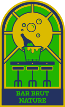
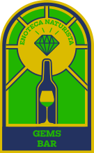
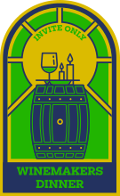

GREEN is GOLDEN
brand guide
UNITED BY WINE
Three colors. No gradients. No transparency. Every element uses one of these three plus white.
Gold background, navy text, green accents. Festive, energetic. Used for posters, ads, website hero, most materials.
Navy background, gold text, green accents. Grounded, readable. Used for info sections, confirmations, contrast panels.
Two fonts. Vicky Black for the festival voice. Inter for the information layer. Headlines are always lowercase.
The brand mark combines the festival's wine bottle illustration with the De Hallen church venue. Three variants for different contexts.
The "United by Wine" ribbon is a recurring brand element. Green fill, white uppercase text, pennant shape. Always centered, always between the festival name and the date.
Custom hand-drawn illustrations. Bold navy outlines, green and gold fills. Rough, linocut-like. Always inside a circle with a navy border.

Bar Brut Nature
Gems Bar
Winemakers DinnerBase unit: 8px. Every spacing value is a multiple. No arbitrary values.
Vicky Black headlines are always lowercase. The font's weight and character do the shouting — capitalization would be redundant. This gives the brand its casual, approachable festival energy.
Navy, gold, green. Plus white for inverse text. That's it. No pastels, no gradients, no opacity tricks. The constraint is what makes the brand instantly recognizable.
The background is always gold or navy. White backgrounds are not allowed. Gold IS the brand — it's the first thing people see and the last thing they remember.
Illustrations are rough, bold, linocut-like. No clean vectors, no gradient fills, no 3D effects. The imperfection is the aesthetic. It feels like a festival, not a corporation.
Photography is documentary. Real moments from the festival floor. Never staged, never stock. Text over photos always sits on a solid color bar — never floating on the image.
A friend inviting you to something great. Not a corporation selling tickets.
ticket sales have started!
all day oysters and paired wines
thank you and salut!
18 november for professionals only
We are pleased to announce that tickets are now available
Curated selection of biodynamic offerings
An unmissable oenological experience
Exclusive trade-only showcase event
Green is Golden — parent brand, always this mixed case
United by Wine — tagline, uppercase when in the banner
A'dam — city abbreviation, with apostrophe
De Hallen Amsterdam — venue, sentence case
Documentary and warm. Real people, real wine, real moments. Full saturation, no filters. Text over photos always on a solid color bar.


Never use a white background
Never use green as a background color
Never use Vicky Black in uppercase for headlines
Never place text directly on a photo
Never use colors outside the three-color system
Never use gradients, shadows, or transparency
Never use rounded corners on rectangles
Never use stock photography
Never write headlines in title case